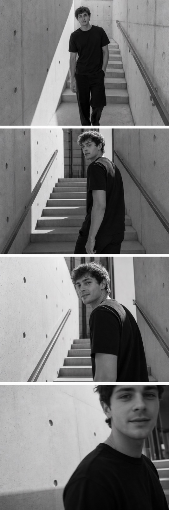
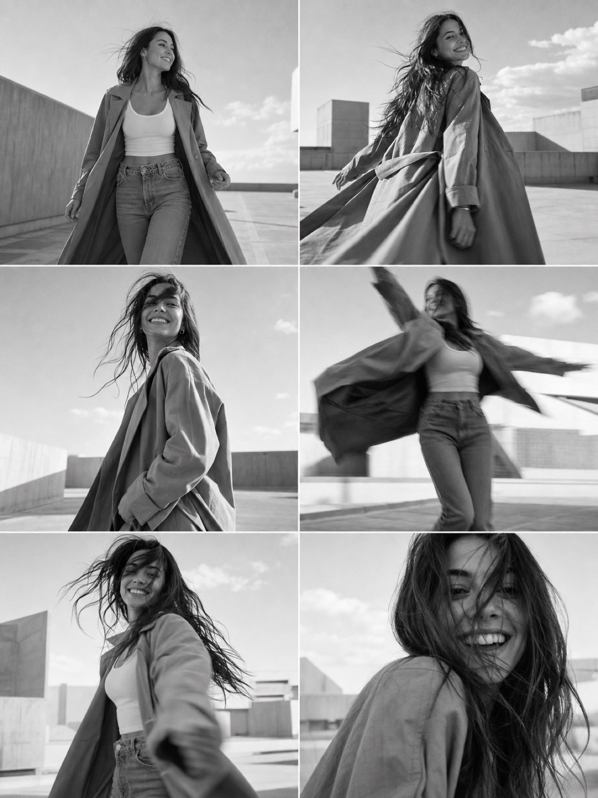
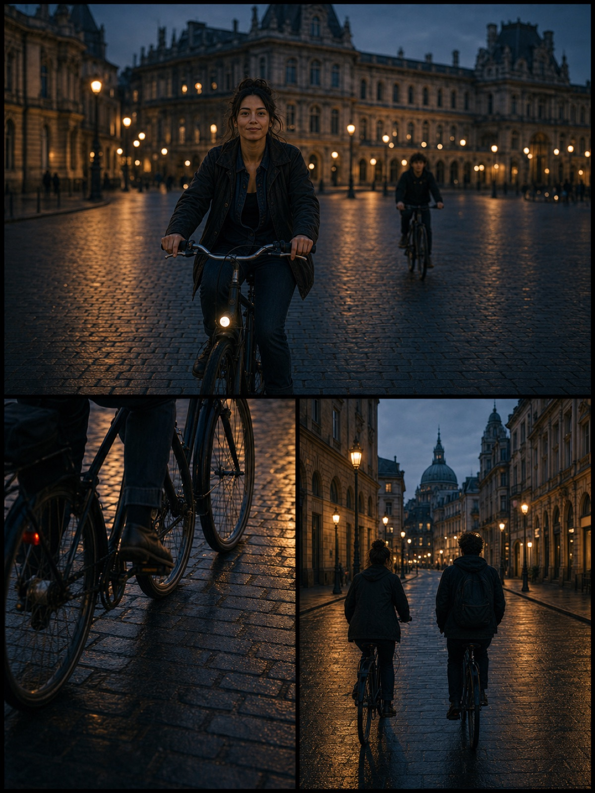

01 / LAYOUTS
Choose the rhythm before you shoot.
Start with 20+ layouts, then resize sections, adjust borders and shape the composition around your story.

MULTI-FRAME CAMERA FOR IPHONE
Capture 2–6 photos or moving clips, one frame at a time. layoutcam brings them together as a single composition.
No account required. Your photos stay on your device.

04 / 04 ● RECDon’t flatten a memory into one shot.
01 / LAYOUTS
Start with 20+ layouts, then resize sections, adjust borders and shape the composition around your story.

02 / PHOTO + MOTION
Mix still photos and moving clips in one multi-frame composition, with sound from the frame you choose.
03 / FINISH
Apply filters, grain, bloom, color and borders consistently across every frame.
